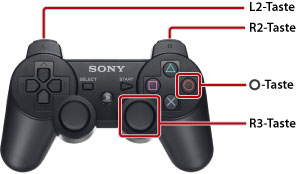

Verwenden dieses Handbuchs
Dieses Handbuch enthält ausführliche Informationen zur PS3™-System-Software. Informationen zu Hardware-Funktionen und zur Produktsicherheit finden Sie in der mit dem System gelieferten Dokumentation.
Hinweise zum Anzeigen des Handbuchs
Es empfiehlt sich, das Handbuch in folgender Umgebung anzeigen zu lassen:
- Aktivieren Sie JavaScript in Ihrem Browser. Wenn JavaScript im verwendeten Browser deaktiviert ist, wird das Handbuch möglicherweise nicht einwandfrei oder gar nicht angezeigt.
- Wenn Sie das Handbuch auf einem PC anzeigen lassen, verwenden Sie Microsoft Internet Explorer 6.0 oder höher.
Navigieren im Handbuch mit dem PS3™-System
Die folgenden Grundfunktionen stehen zur Verfügung, wenn Sie das Handbuch mit dem (Internet-Browser) des PS3™-Systems anzeigen.
(Internet-Browser) des PS3™-Systems anzeigen.
| Richtungstasten | Verschieben des Zeigers auf einen Link. |
|---|---|
 -Taste -Taste |
Öffnen des Links. |
| Rechter Stick | Scrollen in eine beliebige Richtung. |
| L1-Taste | Zurück zur vorherigen Seite. |
Die Anzeige können Sie folgendermaßen zoomen.

| Drücken der R3-Taste (rechter Stick) nach unten | Verwenden der Zoom-Anzeige./Aufheben der Zoom-Anzeige. |
|---|---|
| Gedrückthalten der L2-Taste/R2-Taste während des Zooms | Vergrößern der Anzeige./Verkleinern der Anzeige. |
Gedrückthalten der  -Taste während des Zooms -Taste während des Zooms |
Aufheben der Zoom-Anzeige. |
Erläuterung zu den Tastenbezeichnungen in diesem Handbuch
Welche Tasten am PS3™-System zum Bestätigen und Abbrechen von Vorgängen verwendet werden, hängt von der Region und dem Produkt ab. Grundsätzlich gilt: In den Handbuchversionen in Englisch oder einer anderen europäischen Sprache wird zum Bestätigen und zum Abbrechen eines Vorgangs verwendet, während in Versionen in einer sonstigen Sprache zum Bestätigen und zum Abbrechen verwendet wird.
Drucken des Handbuchs
Sie können das Handbuch von einem PC aus drucken. Wenn Sie die folgenden Schritte ausführen, können Sie mehrere Seiten auf einmal drucken.
1. |
Lassen Sie im Microsoft Windows Internet Explorer das [Inhaltsverzeichnis] dieses Handbuchs anzeigen. |
|---|---|
2. |
Wählen Sie im Menü „Datei“ von Internet Explorer die Option [Drucken]. |
3. |
Wählen Sie die Registerkarte [Optionen] und aktivieren Sie das Kontrollkästchen [Alle durch Links verbundenen Dokumente drucken], um das Handbuch zu drucken. |